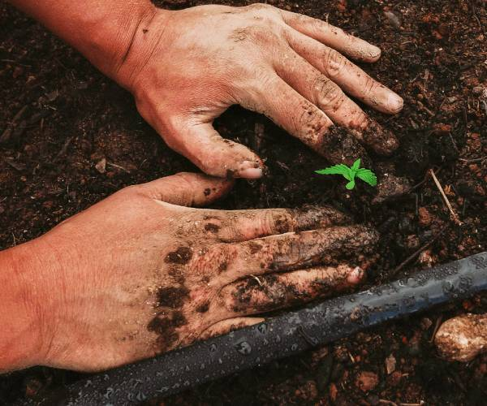
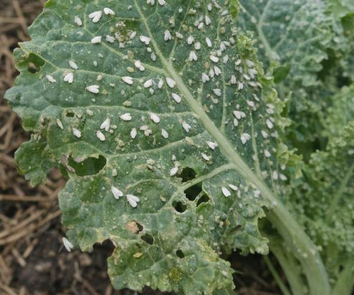

Identificação rápida das principais pragas e doenças em tomate, mandioca e outras culturas locais.
O segredo de uma colheita saudável no Distrito Federal está no Manejo Integrado. Saiba como prevenir ataques antes mesmo de as pragas surgirem.

Dica do Especialista:
O monitoramento semanal reduz custos em até 30%.Insetos e ácaros podem comprometer a produtividade em poucos dias. O segredo está em conhecer os hábitos das pragas que atacam as culturas do DF.

Alerta Campo:
A detecção precoce evita a migração para toda a roça.